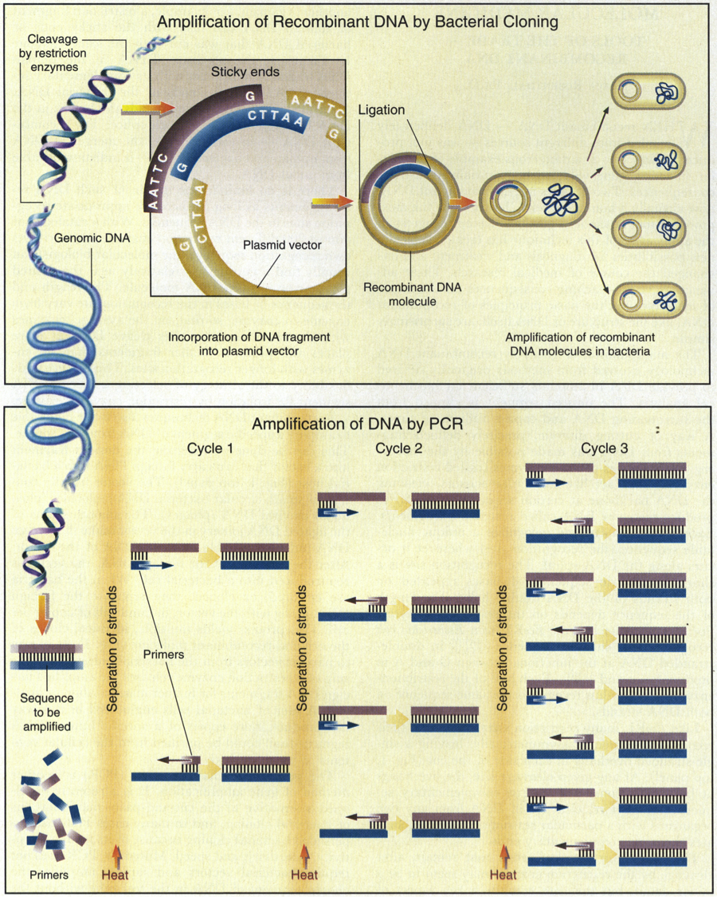
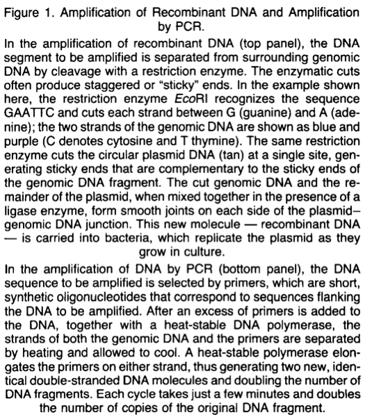

Nursing: the Profession
Sciences have been helping us understand the world we live in for 9,000 years. A tablet was found dated from 492 BC with records of astronomical data. From there we have researched and sought to understand everything this world has to offer. We started big, with the stars, now we understand things like DNA and quarks or parts of electrons. Physics has taught us why things move chemistry allows us to create things like gasoline but one of the most important fields of research is the medical field. The “Modern” medicine era started in the 15 hundreds after the black death over the past six decades we have exponentially increased our life expectancy by 54 years. Medicine has increased the quality of life of humans. Those who practice medicine are the ones that can preform recently thought miracles on the human body. One very important part of the medical team is a nurse.
This paper will analyze the experience you get on the job as a medical professional, as well as the expectations of a nursing student in this discipline.
As a student
Nursing is a very competitive and expanding industry. Nursing school at msu is not an easy path 120 students are admitted each year. The College receives 2-3 times the number of applications per seat. The average GPA for the cohorts admitted have ranged from 3.52 - 3.79. The class loads are not easy either. Required pre-nursing classes include organic chemistry, anatomy and microbiology. Only the determined and hard working can make it through what these students are required to do. It must be so because nurses have a very important job of saving lives.
Nursing is very competitive and a lot is expected from the pre-nursing students before they apply for nursing school. One major area the students are challenged is in reading. Reading is challenging because students need to comprehend abstract concepts, dense reading and complex language. this requires them to think critically, a skill crucial and fundamental in the sciences. Reading lab reports is a large part of understanding the medical world and not the easiest thing to do. In a very simple lab report a student can learn about recombinant DNA in bacteria. Tom Tarn an anesthesiologist from Midland Michigan explains, “Reading in the sciences is unique in that you have to combine multiple pieces of information to make a picture. You have to look at the tables and the text to figure out what the author is trying to tell you.” An excerpt from the scholarly journal by Nadia Rosenthal, Ph. D. shows the amplification of recombinant DNA
 